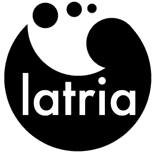

Latria, a lightweight scripting language.
Written by Benjamin Friedman Wilson, November 28th, 2015
Lately I have been focusing intently on finishing up a little scripting language of my own design, something called Latria.
First, a little background on why I started this in the first place. Overall, I desired a lightweight, embeddable scripting language. Something with an emphasis on cross language meshing. There are quite a number of loose scripts, programs, etc. that I have written over the years and I desired a way to work with them collectively when I could. Usually this involved writing up bash scripts, batch scripts, lua scripts, or other scripts to mediate between one or more programs or scripts that I had written. Generally this involved capturing input and interpolating it into another program, which took a bit of work and was unsightly at times.
At one point I had a thought. Wouldn't it be neat if I could just inline the desired functionality from another language, creating a sort of frankenstein script. Something that could execute itself, but could also run other lines of code in other languages. That was when I started writing up Latria over a year ago. Now, with the language nearing completion, I'm ready to test it's mettle. It's been a very long process, but here I'll just cover some general goals of the language.
- Execute multiple languages inline
- Interpolate values to and from languages
- Be relatively independent of the underlying system
- Be lightweight enough not to be a nuisance to add to an existing project

In order to achieve those goals I choose to write Latria in ANSI-C (following the C90 standard). It's a bit outdated, but assures some reasonable reverse compatibility with older systems. To achieve cross language execution Latria uses a glorified piping mechanism, which allows embedding of source code from (just about) any another language. When embedding source code the syntax looks a bit like the following.
//assigns 'value' to the result of what is run between ## and #>
value##
language specification
code in another language to run
#>
Due to the number of variations from language to language source code is required to fit inbetween the ## and #> sequences with nothing else on the line (excluding whitespace). The statement as a whole is effectively a multi-line system execute, but allows variables to interpolated via IN{var} in order to dynamically alter the code. The current setup does only allow system execution, but in the future I will most likely create a stronger tie to commonly used languages such as Java, PHP, Python, etc; but for now this syntax is fairly generic, allowing it to work for most of my needs.
Now during the course of building latria I had constructed a simple syntax-tree interpreter, slightly adhoc. This was slow, but worked. Eventually I migrated this syntax tree into what became the compiler, and created a standalone Virtual Machine to which bytecode could be fed into. The interpreter for the VM accepts Latria bytecode and embedded source code for other languages as plain text, which is executed on the system as mentioned before. The interpreter can also be coupled with the compiler, creating a standalone executable that is capable of both compiling and executing source code. To keep things simple this will be the default build when the language is released. However for embedded systems or size/time sensitive implementations the interpreter and compiler can be built separately. Requiring only that the Latria source code be compiled beforehand in order to run.
There is quite a lot that I've packed into this language, while still attempting to keep it simple. It supports basic types of Number (double,float,int), String, Array, File and Boolean values. There is a very basic DFA regex included that I wrote from scratch. It supports most of the basic quantifiers (no backtracking) and has capturing parentheses. It will also support networking for basic server/client systems. Overall the interpreter weighs in at under 100kb, while the interpreter and compiler together are around 150kb. Not too shabby, but this is still pretty fat and I expect some culling before the release will make it a more comfortable fit for embedded systems.
If you're interested (and when it's released) you can check out the project and download the source code at latria.uphouseworks.com. There is still a lot to attend to but I expect to put up Latria sometime around December 10th. I intend on making Latria opensource for C programmers and others that are interested in enhancing the functionality of the language. Overall with a year's worth of code in it I still expect to see large room for improvement at the least. Languages take years to mature before they are accepted for general use; so take Latria with the consideration that it is still young and has a ways to go. Hopefully it will be something we all can use!
Questions? Corrections? Concerns? You can reach me at friedman.benjamin@gmail.com